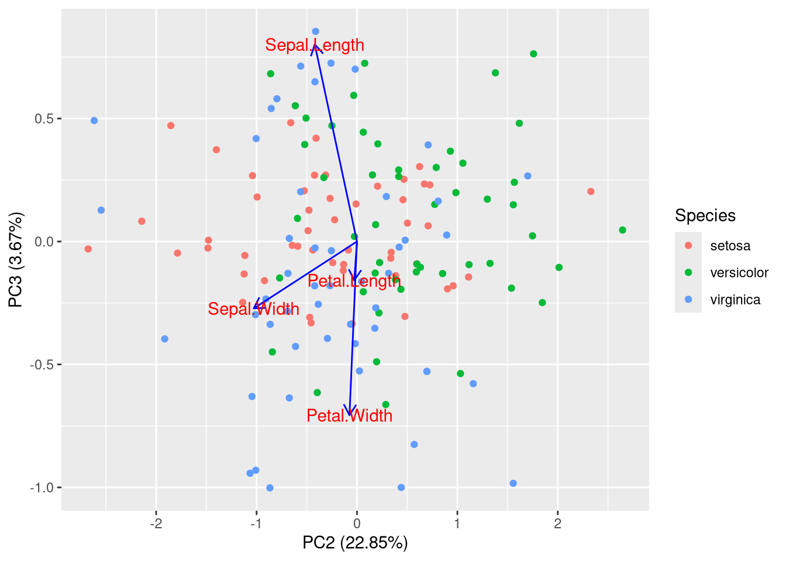
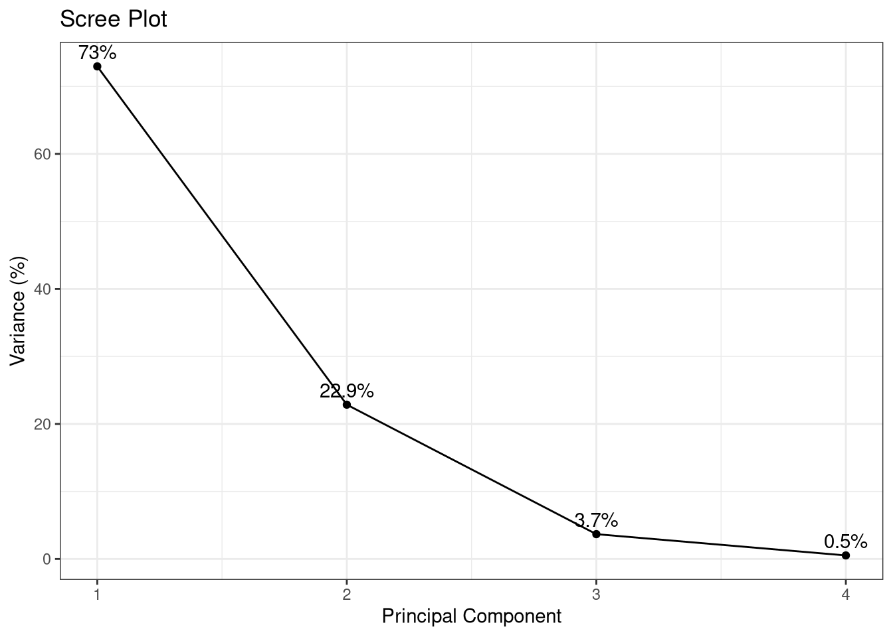

# tidyverse and ggplot
# install.packages("tidyverse")
# interactive plots
# install.packages("plotly")
# to plot pca objects
# install.packages("ggfortify")
# install.packages("Rtsne")
# install.packages("umap")
library(tidyverse)Foundations of Multidimensional data visualization
1. Чи всі дані в біології є багатовимірними?
Перед тим, як перейти до багатовимірних даних, зазначимо, що далеко не всі дані в біології є багатовимірними, наприклад, значна кількість експериментів продукує часові ряди (time series), які є виміром величини у часі. (Див. графік Human hight - зріст у вікіпедії).
Однак дійсно, навіть найпростіші фенотипічні виміри рослин вже мають декілька покажчиків: експерименти Менделя мали 7 ознак посівного гороху, датасет iris (півники, ірис) в R має 4 виміри для кожної рослини: ширину і довжину пелюстки і чашолистка.
2. Найбільш уживані багатовимірні дані
Окрім опису фенотипів, які потребують багато вимірів, типовими даними в сучасній біології є дані генетичної мінливості і дані експресії РНК.
У випадку генетичної мінливості дані генотипування, панельного, екзонного або геномного секвенування запроваджують молекулярні генотипи для мільйонів сайтів ДНК, тобто розмірність датасету популяційного генотипування біобанків може сягти 10^6 генотипів Х 10^6 зразків.
Дані популяційного генотипування можуть бути приведені до вигляду матриці генотипів (див. рис).
Дані експериментів вимірювання експресії генів мають вигляд матриці експресії Гени х Зразки, де кількість генів залежить від типу експеримента і може сягати від 20 до 50 тисяч, а кількість зразків від 6 (3 для експерименту і 3 для контролю) до десятків (складні експерименти з багатьма факторами, часові ряди тощо). Зазначимо, що в конкретному випадку матриця експресії має багато нулів, тому що не всі гени експресуються в даній тканині, типовий зразок тканини має менше 10 тисяч активних (білок-кодуючих) генів.
В експериментах з секвенування поодиноких клітин матриця експресії продукується для кожної клітини (великі експерименти мають до 100 тис клітин і більше). З причини особливості експриментів секвенування поодиноких клітин, в них вимірються експресія ще меншої кількості генів (3-5 тис максимум), однак наявність матриці експресії в кожній клітині збільшує складність датасета до 5,000 генів Х 50,000 клітин (клітини також можуть класифікуватись за експериментальними умовами і факторами, що додає додаткові виміри).
Мультимодальні експерименти дозволяють вимірювати не тільки еспресію генів, а, наприклад, стан хроматину чи експресію білків в кожній клітини, і аналізувати ці виміри разом. Мультимодальність додає додаткові виміри і ускладнює структуру датасета.
3. Обмеження на сприйняття даних високої розмірності
Людина може ефективно оперувати тільки 5-7 змінними водночас і ефективно сприймає майже виключно двомірні графіки (див. цитату із книги Клауса Вілке).
За століття розвитку науки напрацьовані математичні понятті і методи, які дозволяють описувати багатовимірну реальність: вектори, матриці, функції, метричні простори, векторні поля, статистичні методи, теорія динамічних систем, диференційні рівняння, чисельні методи та багато інших.
4. Проєкцій мапи земної кулі
Найчастіше ми зустрічаємся із багатовимірним простором земної кулі, на якій ми мешкаємо. Це 3 фізичні координати, а також додаткові виміри - наявність водних перешкод, доріг, будинків, залізниці.
Навіть якщо сфокусуватись тільки на двомірній топографії, проєкція земної кулі на двомірний простір не є простим завданніям. Найуживаніша проєкція Меркатора зберігає локальну структуру меридіан x паралель як перендикулярних прямих, але значно деформує площини найближчі до полюсів, що призвело навіть до хибного сприйняття розміру окремих країн у масовій свідомості, наприклад, реальний відносний розмір Африки до Гренланції ~ 30 : 2.1.
Розроблені багато інших проєкцій, які зберігають площі та відстані між точками (див проєкцію AuthaGraph).
5. Корисні проєкції багатовимірних даних на двомірну площину можливі
Як і випадку проєкцій земної кулі, проєкції біологічних та інших багатовимірних даних на двомірну площину, які дозволяють робити корисні аналізи і знаходити закономірності і патерни в даних, існують і постійно застосовуються в дослідженнях.
Деякі з поширених методів: PCA, tSNE, UMAP.
DataMap Plot - це готове рішення для великих датасетів на основі UMAP, яке дозволяє робити статичні і динамічні мапи для візуалізації великих датасетів (наприклад, всіх текстів Вікіпедії чи всіх статей в Архіві препринтів).
6. Метод головних компонент (PCA)
Метод головних компонент (PCA) дозволяє обрати нову систему координат таким чином, що нові осі будуть впорядковані за рівнем варіації даних (перша вісь буде відповідати найбільшій варіації).
Найпростійший вступ до PCA можна знайти у короткому відео професора університету Північної Кароліни Джоша Стармера: PCA step-by-step.
library(plotly)
library(ggfortify)
glimpse(iris)Rows: 150
Columns: 5
$ Sepal.Length <dbl> 5.1, 4.9, 4.7, 4.6, 5.0, 5.4, 4.6, 5.0, 4.4, 4.9, 5.4, 4.…
$ Sepal.Width <dbl> 3.5, 3.0, 3.2, 3.1, 3.6, 3.9, 3.4, 3.4, 2.9, 3.1, 3.7, 3.…
$ Petal.Length <dbl> 1.4, 1.4, 1.3, 1.5, 1.4, 1.7, 1.4, 1.5, 1.4, 1.5, 1.5, 1.…
$ Petal.Width <dbl> 0.2, 0.2, 0.2, 0.2, 0.2, 0.4, 0.3, 0.2, 0.2, 0.1, 0.2, 0.…
$ Species <fct> setosa, setosa, setosa, setosa, setosa, setosa, setosa, s…# чашолисток і пелюстка
df <- iris[1:4]
# prcomp is from stats
pca_res <- prcomp(df, scale. = TRUE)
# autoplot is from ggplot
# usually loadings are not plotted
p <- autoplot(pca_res,
data = iris, colour = "Species",
loadings = TRUE,
loadings.color = "blue",
loadings.label = TRUE) +
theme_bw() +
theme(base_size = 20)
# interactive
ggplotly(p)autoplot(pca_res, data = iris, colour = 'Species', x = 2, y = 3, # PC2 vs PC3
loadings = TRUE,
loadings.label = TRUE,
loadings.colour = "blue", # Customize loading color
scale = 0, # Adjusts the scaling of the loadings vectors (0 is often best)
title = "PCA Plot (PC2 vs PC3)")
# Calculate the percentage of variance explained by each PC
eigenvalues <- pca_res$sdev^2 # Eigenvalues
variance_explained <- (eigenvalues / sum(eigenvalues)) * 100
summary(pca_res)Importance of components:
PC1 PC2 PC3 PC4
Standard deviation 1.7084 0.9560 0.38309 0.14393
Proportion of Variance 0.7296 0.2285 0.03669 0.00518
Cumulative Proportion 0.7296 0.9581 0.99482 1.00000# Create a data frame for plotting
scree_data <- data.frame(
PC = 1:length(eigenvalues),
Variance = variance_explained
)
# Create the scree plot using ggplot2
ggplot(scree_data, aes(x = PC, y = Variance)) +
geom_line() +
geom_point() +
geom_text(aes(label = paste0(round(Variance, 1), "%")), vjust = -0.5) + # Add percentage labels
labs(title = "Scree Plot",
x = "Principal Component",
y = "Variance (%)") +
theme_bw() # Optional: Use a black and white theme
7. t-SNE
library(Rtsne)
set.seed(1)
remove_iris_dup <- unique(iris)
iris_matrix <- as.matrix(remove_iris_dup[,1:4])
tsne_out <- Rtsne(iris_matrix)
tsne_plot <- data.frame(x = tsne_out$Y[,1],
y = tsne_out$Y[,2],
species = remove_iris_dup$Species)
p1 <- tsne_plot |> ggplot(aes(x=x,y=y, colour = species)) + geom_point()
ggplotly(p1)8. UMAP
library(umap)
# Perform UMAP transformation on the Iris dataset (excluding the 'Species' column)
# usually method="umap-learn" is used, you'd need a python package for that
iris_umap <- umap(iris[, 1:4], n_neighbors = 15,
min_dist = 0.1,
random_state = 15)
iris_umap_df <- data.frame(
x = iris_umap$layout[, 1],
y = iris_umap$layout[, 2],
species = iris$Species
)
# Create the UMAP plot
p2 <- ggplot(iris_umap_df, aes(x = x, y = y, color = species)) +
geom_point() +
theme_classic()
ggplotly(p2)References
PCA
tSNE
- StatQuest: t-SNE, Clearly Explained
- tSNE in Ukrainian
- tSNE from the author
- The art of using t-SNE for single-cell transcriptomics
- The specious art of single-cell genomics
- The art of seeing elephant in the room
- Quick and easy t-SNE analysis in R
- Introduction to Machine Learning - 11 - Manifold learning and t-SNE